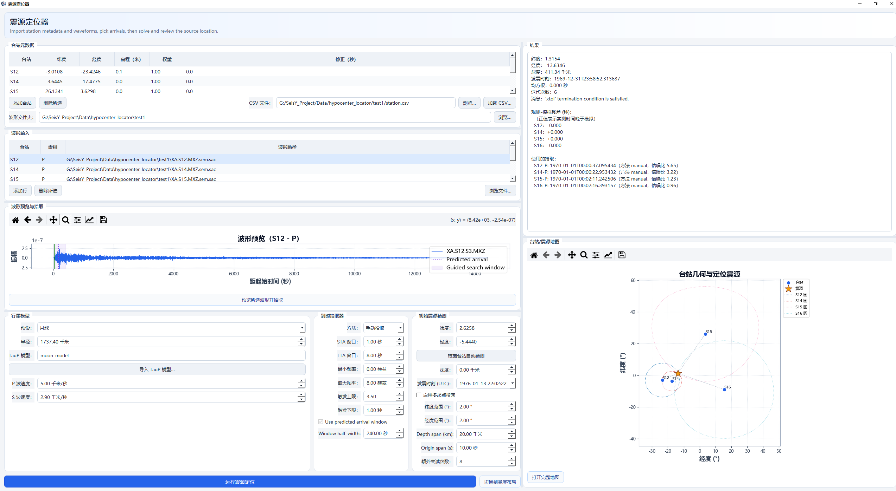

震源定位
先说清楚：这个工具的效果很依赖你喂进去的东西
震源定位器不是「导入波形、点一下、出震源」的自动化工具。它的结果好坏几乎 完全由两件事决定：初至拾取准不准、速度模型合不合适。 两者都需要你手工介入，而程序无法判断你给的对不对。
实际使用中常见的状况：
- 自动拾取基本只能当起点。STA/LTA 在低信噪比、初动不清晰、 或存在前兆噪声时会把包络当成初至，必须逐台看预览图手工改。
- 速度模型一改，位置就动。用 iasp91 这类全球平均模型定位区域地震， 本身就有系统性偏差；模型参数（P/S 速度）填得随意，解出来的深度可能完全不可信。
- 台站少于 4 个时三维定位欠定，深度尤其不可靠，可能解出负深度或贴地表。
所以请把它当作快速估计、教学演示、或与专业定位软件交叉验证的工具， 不要直接拿它的输出当作正式定位结果发表。要做生产级定位，建议用 SeisComP / HYPOINVERSE / NonLinLoc 这类专门软件，并配合人工震相拾取。

入口：工具 › 震源定位器。
定位做的是这件事：已知几个台站的位置和它们收到震相的时刻，反推震源在哪、 什么时候发的震。整个过程分四块，缺一块都算不出来。
1. 台站元数据
| 列 | 含义 |
|---|---|
| 台站 | 台站代码，必须和波形文件里的台站名一致 |
| 纬度 / 经度 | 台站坐标，度 |
| 高程（米） | 台站海拔，影响走时 |
| 权重 | 该台在反演中的权重，0 到 1 |
| 修正（秒） | 该台的钟差修正 |
两种填法：
- 手工 添加台站 后逐格输入
- 加载 CSV… 一次导入（CSV 需包含台站代码、纬度、经度等列）
用波形文件夹自动匹配
填好台站表后，在「波形文件夹」指定一个目录，程序会按台站代码自动把波形文件
和台站对应起来，不必在下面的波形输入表里一个个点。
2. 波形输入
「波形输入」表列出 台站 / 震相 / 波形路径。震相写 P 或 S——
同一个台站可以有两行，一行 P 一行 S。
3. 预览与拾取
选中一行后点 预览所选波形并拾取，下方画布显示该道波形， 自动拾取的结果会标在图上。
| 参数 | 作用 |
|---|---|
| 半径 | 搜索半径，决定初动拾取的窗口范围 |
| TauP 模型 | 走时计算用的地球模型（如 iasp91） |
| P 波速度 / S 波速度 | 用于定位的初始速度，影响反演收敛 |
| LTA 窗口 | 拾取的长时窗长度 |
| 最小频率 / 最大频率 | 拾取前的滤波频带 |
| 触发上限 / 触发下限 | STA/LTA 比值的上下阈值 |
| Window half-width | 拾取窗口半宽 |
自动拾取必须人工核对
STA/LTA 在低信噪比下会把噪声包络当成初动。定位误差对走时非常敏感——
一个台拾错 0.5 s，震源位置可能偏出几十公里。逐台看一遍预览图再往下走。
4. 求解与判读
点底部的 运行震源定位，右侧「结果」面板给出解和残差。
| 看什么 | 说明 |
|---|---|
| 震源坐标与深度 | 反演结果 |
| 发震时刻 | 反演结果 |
| 残差 | 各台观测走时与理论走时之差 |
| 台站/震源地图 | 台站分布与震源位置的空间关系 |
打开完整地图 在行星台站地图里查看更大范围的空间关系。
残差看分布，不只看均方根
所有台的残差都在同一方向偏，说明速度模型整体偏快或偏慢；残差分散且个别台
特别大，说明那个台的拾取或坐标有问题。先修个别台，再调模型。
常见问题
定位不收敛？ 常见三个原因：台站数少于 4 个（三维定位的最低要求）、初始速度与模型差太多、 拾取里有明显错点。先减少台站数量做子集试算，能定位说明是某个台的问题。
深度解出来是负数或贴在地表？ 深度约束弱。只有近台时深度几乎不可解，需要至少一个震中距小于震源深度的台站。
结果里某台残差特别大？ 检查该台的钟差修正和坐标。阿波罗数据尤其要注意 ATT 时间矫正 （数据 › 预处理 › ATT时间矫正）。